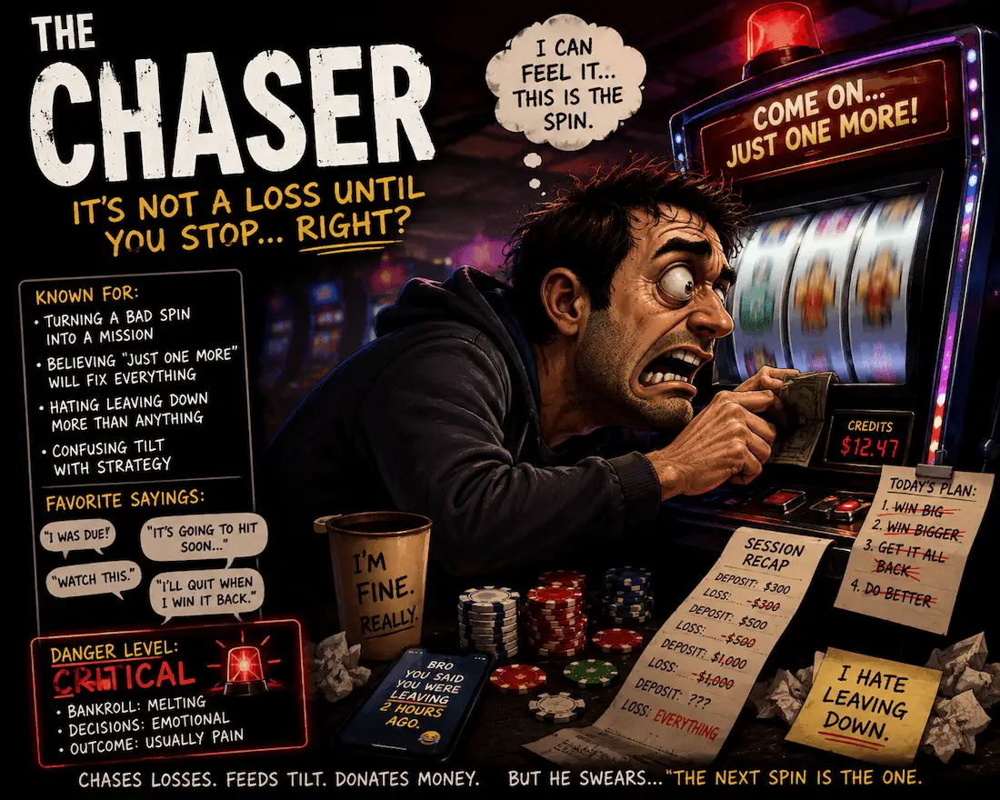
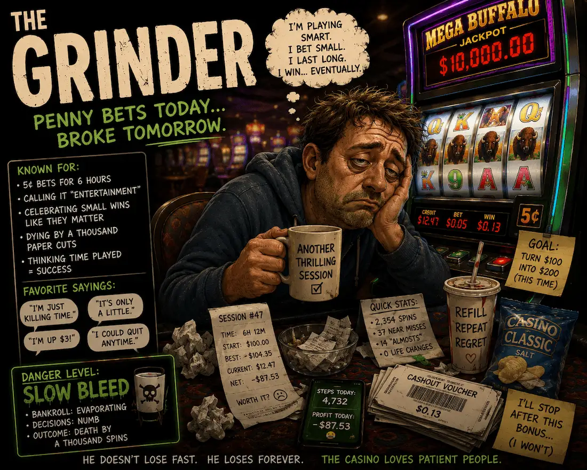
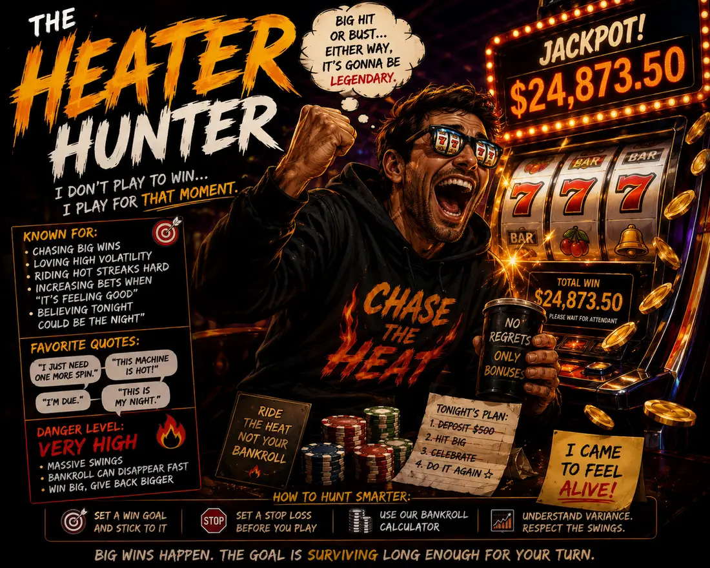

The Chaser
Never down. Only temporarily inconvenienced.
You might be a Chaser, Grinder, Heater Hunter, Strategist, or Chaos Goblin. We will not reveal which answers point where until you finish.

Never down. Only temporarily inconvenienced.

Low stakes, long sessions, carpet-scented time travel.

Here for fireworks, volatility, and questionable confidence.

House edge aware. Still mortal.

No strategy. Only vibes with a payment method.
This quiz is entertainment, but the leaks are familiar: chasing, overconfidence, boredom, and calling chaos a strategy.
The win does not get closer because the loss feels personal.
Your bankroll is not a hostage rescue operation.
Confidence is not a probability model, even when it wears sunglasses.
Big wins happen. Giving them back is optional.
If one of these lines feels too familiar, the quiz is probably about to be rude.
Your bet size starts acting like a panic button.
Low stakes help, but endless volume can still leak bankroll.
The fireworks are fun until the drought invoices you.
Use limits and tools. Strategy reduces mistakes, not variance.
The casino does not care about your archetype. These tools help you understand bet pressure, variance, and decision cost before the vibes start filing paperwork.
Estimate session risk before your budget becomes a cautionary screenshot.
Use the bankroll calculatorPractice decisions where strategy matters without lighting real money on fire.
Open blackjack trainerWatch volatility do its little dance before you invite it into your wallet.
Try the slot simulatorIt is mostly entertainment, but the behaviors are based on real gambling patterns like chasing losses, bankroll bleed, volatility seeking, and overconfidence.
Yes. Big wins can happen. The issue is that the house edge and variance still matter over time.
Giving the win back because they never decided when to stop.
Start with the bankroll calculator, because bet size controls how much pressure you put on your money.
No. Strategy can reduce mistakes, but it does not erase the house edge or variance.
Whatever personality pops out, the smart next move is the same: know your limits, understand variance, and keep the fun from becoming a payment plan.